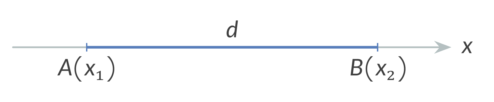
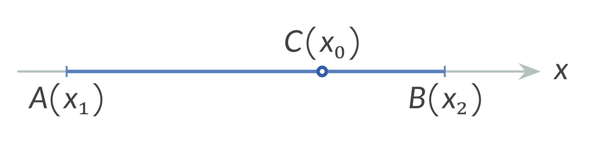
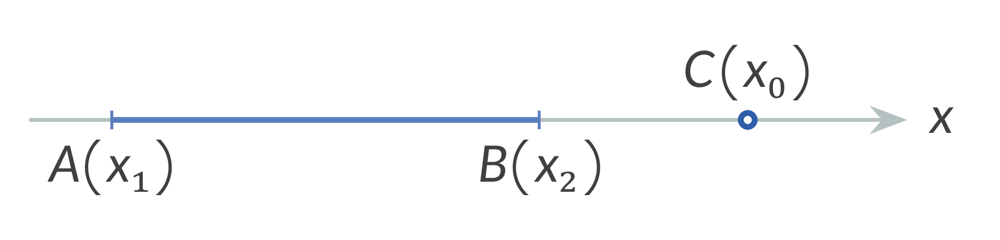

Point Coordinates: $x_{0}, x_{1}, x_{2}, y_{0}, y_{1}, y_{2}$,
Real number: $\lambda$,
Distance between two points: $d$
1. Distance Between Two Points ($d$): The distance $d$ between two points $A$ and $B$ is calculated as: $$d = AB = |x_{2} - x_{1}| = |x_{1} - x_{2}|$$

2. Dividing a Line Segment in the Ratio $\lambda$: The coordinate $x_{0}$ of a point $C$ dividing the segment $AB$ in the ratio $\lambda = \frac{AC}{CB}$ (where $\lambda \neq -1$) is given by: $$x_{0} = \frac{x_{1} + \lambda x_{2}}{1 + \lambda}$$


3. Midpoint of a Line Segment:
The coordinate $x_{0}$ of the midpoint of a line segment is found when $\lambda = 1$:
$$x_{0} = \frac{x_{1} + x_{2}}{2}$$